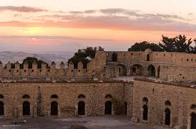
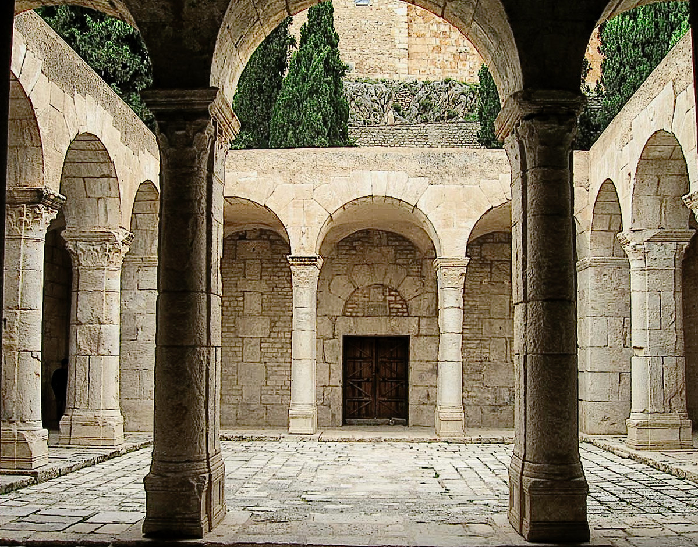
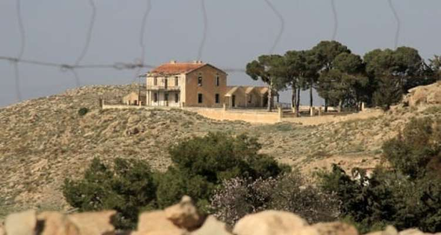
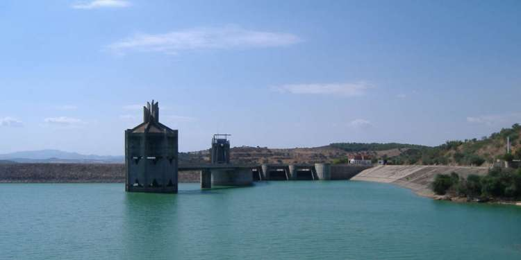

Kasbah du Kef
Située au sommet de la ville, la Kasbah du Kef est une forteresse ottomane impressionnante offrant une vue panoramique sur toute la région. Elle témoigne de l'importance stratégique du Kef au fil des siècles.
Découvrez les sites emblématiques du gouvernorat du Kef, entre patrimoine romain, héritage tunisien et espaces naturels préservés.

Située au sommet de la ville, la Kasbah du Kef est une forteresse ottomane impressionnante offrant une vue panoramique sur toute la région. Elle témoigne de l'importance stratégique du Kef au fil des siècles.

La Basilique Saint-Pierre est un édifice byzantin rare en Tunisie. Ce lieu historique reflète la présence chrétienne ancienne et fait partie des monuments les plus marquants du Kef.

La maison où Habib Bourguiba séjournait durant ses visites au Kef est aujourd’hui un lieu symbolique retraçant une partie du parcours du premier président tunisien.

Chemtou est l’un des plus grands sites archéologiques du nord-ouest. Connu pour son marbre jaune unique, il abrite un musée moderne ainsi que des vestiges numides et romains spectaculaires.

Ces sources thermales naturelles attirent visiteurs et habitants en quête de détente. Elles sont réputées pour leurs bienfaits thérapeutiques et leur eau chaude en plein cœur de la nature.

Installé dans une ancienne église, ce musée met en valeur la culture du Kef à travers des objets traditionnels, des habits anciens, des instruments de musique et des reconstitutions du mode de vie local.